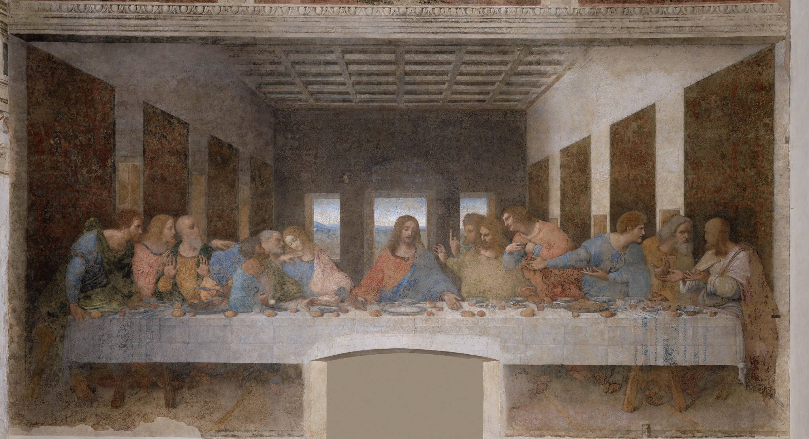

As artes plásticas foram um dos principais espaços de transformação cultural durante o Renascimento europeu. Entre os séculos XIV e XVI, especialmente nas cidades italianas, a pintura, a escultura e a arquitetura passaram por mudanças relacionadas à retomada de referências da Antiguidade clássica, ao desenvolvimento do Humanismo e à valorização da observação da natureza e do corpo humano. Essas mudanças não significaram um rompimento completo com a tradição medieval. A religião continuou ocupando um lugar central, mas os artistas passaram a representar o mundo, o corpo e a natureza de novas maneiras.
Nesse contexto, novas técnicas foram desenvolvidas, destacando-se a perspectiva linear, o estudo das proporções e da anatomia e a exploração da luz e da sombra. Com isso, a arte passou a dialogar cada vez mais com conhecimentos de geometria, óptica e observação da natureza (MACHADO; FLORES, 2013).
Uma das características fundamentais da arte renascentista foi a aproximação com os modelos da Antiguidade greco-romana. O Humanismo estimulou o estudo dos autores e objetos clássicos e contribuiu para a valorização da capacidade humana de produzir conhecimento. Retomar a Antiguidade, porém, não significava simplesmente copiar o passado. Os artistas adaptavam essas referências às ideias e às necessidades de seu próprio tempo. D’Agostino (2003) relaciona esse processo às novas concepções de beleza, proporção e imitação desenvolvidas no período.
Outra mudança importante foi o desenvolvimento da perspectiva. A perspectiva linear permitiu organizar matematicamente o espaço e criar, em uma superfície plana, a impressão de profundidade. Filippo Brunelleschi esteve associado aos primeiros experimentos sistemáticos, enquanto Leon Battista Alberti formulou princípios teóricos em Da pintura. A técnica estabeleceu uma relação específica entre o observador e a representação, contribuindo para o desenvolvimento do naturalismo (BOFFI, 2023).
O corpo humano também ganhou cada vez mais destaque. Os artistas passaram a estudar proporções, músculos, movimentos e expressões para produzir representações mais convincentes. Leonardo da Vinci é um dos principais exemplos dessa aproximação entre arte e investigação da natureza. Seus estudos anatômicos demonstram como o conhecimento científico podia servir à representação artística. Nas pinturas religiosas, esse interesse favoreceu personagens com maior expressividade e humanidade (METROPOLITAN MUSEUM OF ART, 2008).
Na pintura, artistas como Masaccio, Sandro Botticelli, Leonardo da Vinci e Rafael Sanzio exploraram de diferentes formas a perspectiva, o naturalismo, a luz e a representação do corpo. Leonardo destacou-se pelo uso do sfumato, técnica caracterizada por transições suaves entre luz e sombra. Rafael tornou-se conhecido pelo equilíbrio e pela harmonia de suas composições.
Na escultura, Donatello e Michelangelo se tornaram referências importantes. Donatello recuperou elementos da tradição clássica e explorou o corpo e o movimento. Michelangelo, especialmente no David, demonstrou grande domínio anatômico e expressivo, transformando a representação do corpo humano em um dos símbolos da arte renascentista.
A produção artística também esteve muito ligada ao mecenato. Famílias ricas, autoridades políticas, instituições religiosas e elites urbanas financiavam obras e utilizavam a arte para demonstrar devoção, prestígio e poder. Em cidades como Florença, o patrocínio de grandes famílias contribuiu para a concentração de artistas e para a realização de obras de grande importância. Por isso, as artes plásticas tinham ao mesmo tempo dimensões religiosas, culturais e políticas.
Apesar da forte presença da religião, ampliaram-se também os retratos, temas mitológicos e referências à Antiguidade. O artista passou gradualmente a ser valorizado como indivíduo dotado não apenas de habilidade manual, mas também de conhecimentos intelectuais. Essa mudança contribuiu para elevar o status social das atividades artísticas.
As artes plásticas do Renascimento constituíram importante espaço de transformação cultural na Europa entre os séculos XIV e XVI. A recuperação de referências clássicas, o Humanismo, a perspectiva, os estudos anatômicos e a valorização da natureza modificaram profundamente os modos de produzir e interpretar imagens.
Essas transformações não devem ser entendidas como simples substituição da arte medieval. A religião continuou sendo uma das principais fontes de temas e encomendas, enquanto novas formas de representação foram incorporadas às imagens religiosas. O desenvolvimento artístico também esteve relacionado ao mecenato e às estruturas políticas e econômicas das cidades.
Dessa forma, a pintura, a escultura e a arquitetura renascentistas são importantes para compreender a formação da Modernidade, pois permitem observar novas concepções sobre o corpo, a natureza, o indivíduo, o conhecimento, a religião e a função social do artista.
